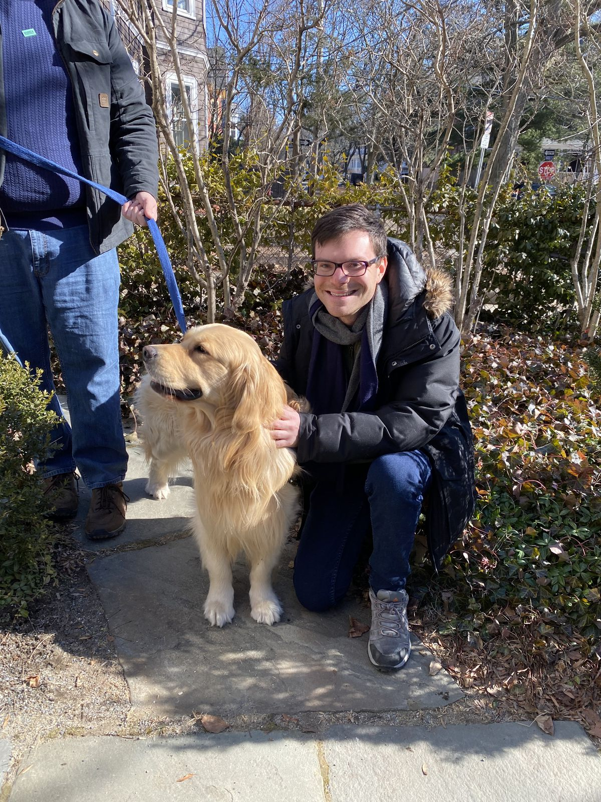
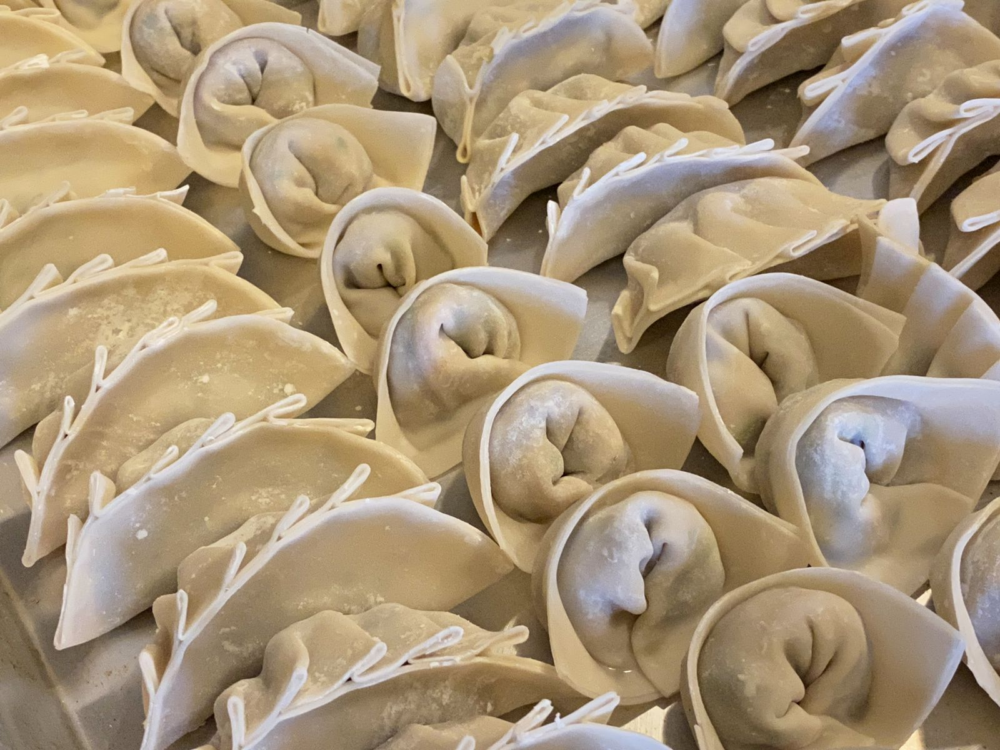
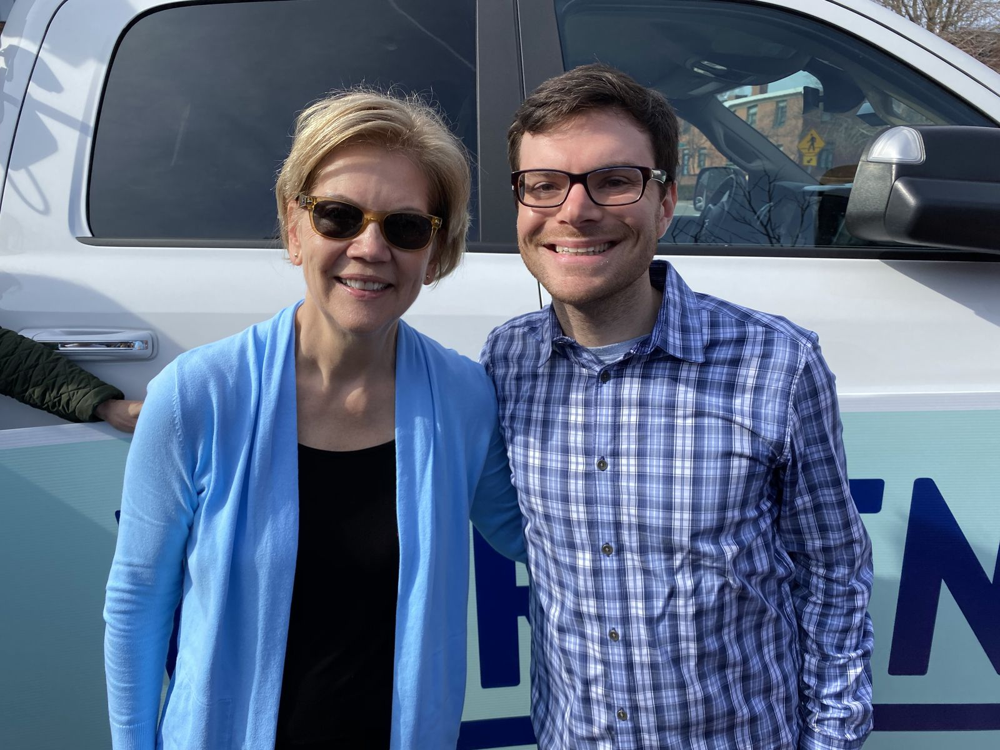
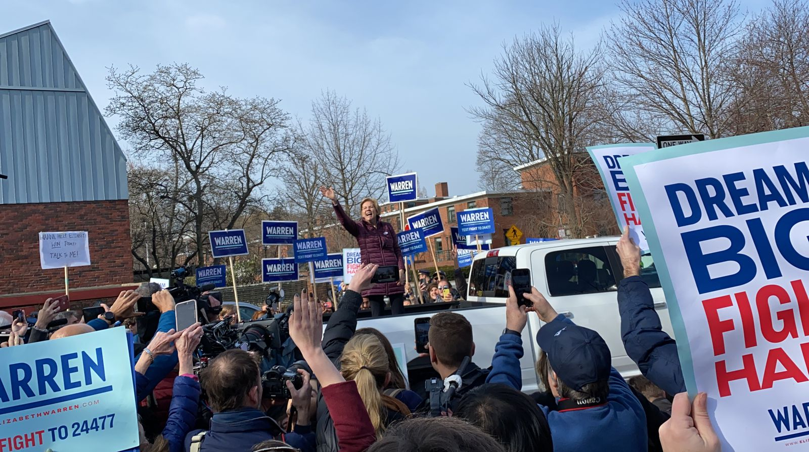
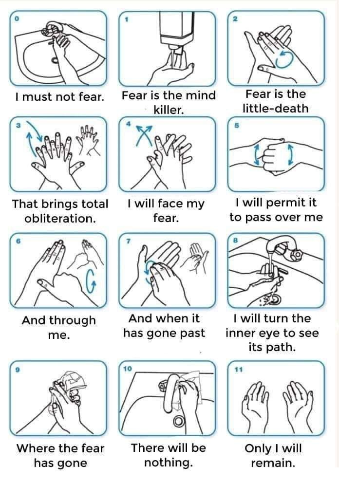

Difficulties and Persisting
This past weeks has been the most difficult in recent memory. It's not necessarily bad. There are always highs and lows, and local minima should always be expected. But it's worth reflecting on the causes and the path forward.
The week started out on a high note. On Sunday morning I connected with two friends to canvass in Somerville ahead of Super Tuesday voting. I hadn't canvassed in a few years, and I've never before canvassed on my own initiative—previously I'd always been asked. But over the past few weeks, I'd felt the growing urge to do more than donate and vote.
Recently I listened to a Hidden Brain episode positing that political engagement is more like hobbyism or a sports rivalry. Most people involved in politics, the podcast claimed, aren't actually doing anything other than consuming the news, sharing outrage and gossip. To make change, it argued, one must go out and do something, especially at the local level. So I set out to do just that.
I arrived in the morning at the canvassing location in Somerville—someone's home—and found that the vast majority of the volunteers were women. That podcast episode also noted that women overwhelming tend to participate in the political process outside of the hobbyist walls of Twitter. I grabbed a bunch of flyers and a route and headed to East Somerville.

Canvassing is an excellent teacher of dealing with rejection, learning shamelessness, and finding your voice. I am terrified of rejection, docile, and shy, so canvassing is a useful exercise that pushes me out of my comfort zone. While some people aren't excited to answer their doors, the vast majority of people I interacted with were happy to see me and talk—some enthusiastically so. I ended the route with a feeling of empowerment. Not to mention the fact that I had met Bailey before I started my route.
Afterwards, I got an excellent slice of pizza from Leone's in Somerville, met up with some friends to make vegan dumplings from scratch, and won $35 at poker. So ended Sunday.

Monday started out a mixed bag. A new person started on my team at work, someone whom I have been looking forward to adding to the team for about a month now. But one critical person on the project, who had been on the project longer than anyone else (myself included) on the team gave notice. An unwanted blow to the team effectiveness as well as my own morale. Add to this the growing fears of COVID-19 entering into the US and evading attempts at containment. That night I went to a restorative yoga class, finding hand sanitizer bottles everywhere. Usually, no matter what is on my mind, by halfway through the class my mind is emptied and relaxed. For the first or second time, that wasn't the case. The entire class, racing through my mind were thoughts of Elizabeth Warren, Joe Biden, Bernie Sanders, Donald Trump, and coronavirus.
Tuesday was going to be a busy day. I set my alarm early for 6:30am but failed to quiet my mind and fall asleep until after midnight. I arose and biked to north Cambridge to get to a campaign event ("Elizabeth Warren goes to vote") before 8am. I've been to events with similar vibes once or twice before. It's comforting to lose yourself in a crowd, cheering and chanting together. It brings a sense of togetherness.

After going to vote with her husband and dog, Elizabeth Warren briefly addressed the crowd and then took photos with everyone who wanted one. To each person she passed, she said: "It's so good to see you. Thank you for coming." For the first few people, I thought she genuinely knew them—we were in fact in her neighborhood where she had lived for the past 25 years. Then I realized she was taking the time to stop and address everyone. I was moved by her authenticity. She spoke of her vision in a purely positive way. The energy was high.

I biked off, not realizing that one of my gloves had fallen out of my jacket pocket, never to be recovered.
Much of the rest of the week was a blur. By Tuesday night, having biked an hour and not slept or eaten much, I was beyond exhausted. I was on autopilot at work. I met family for dinner one night, friends at a ramen bar on another. COVID-19 infections surpassed 100,000 people globally and was fighting with the primaries for the top of the New York Times homepage. Reality began to mirror events in my favorite book, the Plague, and a nervousness enveloped me and those around me. On Friday, I went to the office hours for my Somerville City Councilor. At some point I got an email telling my that my state and federal tax returns had been rejected (update: the issue has since been fixed).
Within a few minutes of getting home on Tuesday night, I was in bed before 10pm. I woke up Wednesday morning hesitant to check the news, but the results were far worse than I expected. Going into Super Tuesday, Warren and Sanders appeared neck-and-neck. The results not only had her finished behind Sanders, but the two of them were behind Biden. In her home state.
The disappointment was devastating. More devastating than I expected. And not just from me. I observed many others who were also shocked at the loss, both supporters and not. I thought back to the energy and optimism and excitement on Tuesday morning, the joy on Warren's face and her supporters' faces that we were about to make big structural changes, juxtaposed against the results on Wednesday morning, and I became crestfallen.
Voters wanted her to be president but they didn't want to vote for her. Americans voting in the Democratic primaries are of split minds here: wanting to remove Trump from the White House and wanting to vote for who they think will make the best president. Somehow these two concepts are different for many. The idea that the candidate that a voter thinks will make the best president is not going to be electable nationwide is mind-boggling to me.
If you think someone will make the best president, you should vote for her.
She's electable if you vote for her.
At her concession speech on Thursday, when the number of COVID-19 infections was surpassing 100,000 globally, Elizabeth Warren was asked by a reported whether sexism played into the election result. I'll be paraphrasing here, but it's hard to imagine a better answer could have been given. Warren said that if she claimed sexism played into the results, then people would call her a whiner. But if she had claimed that sexism had not played into the results, then every woman listening would throw up her hand and say "you've got to be kidding me!"
I've taken a few days to process all of this. Michelle Cottle of the New York Times tried to make sense of women with stellar credentials losing to less qualified men, pointing out that Warren was a better progressive candidate than Sanders and that Klobuchar was a better candidate than Biden. Megan Garber at the Atlantic echos similar sentiments, arguing that Warren was punished for her competence—that people who agreed with her policies couldn't get behind her because they were holding women to a much higher standard than men.
And it's rage-inducing and frustrating and upsetting. And it makes me so angry and so sad.
So I'm going to inject my politics in here for the next few paragraphs. Elizabeth Warren has a detailed plan for almost everything, including tackling income inequality, corruption in Washington, and climate change. She is a strong fighter with a proven track record. As president, she is best qualified to execute her vision to restore and expand the American dream. On practical policy, experience both in and out of Washington, and grit, she far outstrips her rivals in their quest for the Democratic nomination. Yet she still lost. Big time.
What happened? The best answer that I can come up with is that voters don't believe that their vote counts. Remember when I said that she's electable if you vote for her? People still don't believe that. Voters believe that they need to vote for a winner, even if they want another candidate to win. It's a game that's impossible to win. Especially in the primaries, it's a losing game to vote for someone other than the person you want to be president because are trying to get into the mind of someone from a different part of the US with different needs from you.
If you didn't vote for Warren because you think that other Americans who you don't know aren't yet ready for a woman president or a strong progressive president, you should carefully consider the notion that it is actually you who is not yet ready for a woman president or a strong progressive president. Everyone voting against their own interests leads to a result that no one wants.
Today is International Woman's Day, and it is disappointing that the three remaining candidates for president are three old white men. And after Tuesday's defeat, I'm feeling confused. Historically, I remain quiet about issues about women in politics or women in engineering, entirely because I believe that there are enough white men in tech giving their opinion. I don't want to be another one of these unnecessary and unhelpful voices. But simply getting out of the way is not sufficient. So if you are reading this and you have ideas on how I can advance women's causes in politics and engineering and society at large, I would like you tell me. Because as you may recall me writing at the beginning here, it was overwhelmingly women volunteering and organizing at the campaign events. And we need more of those kinds of people empowered, people going out and making real change rather than sitting back, consuming the news and writing tweets.
Speaking of news, COVID-19 is everywhere in the news. It's scary and hard to get the facts. Is it just like a cold or a modern day equivalent of the bubonic plague? And even if it's not much worse than the flu, what will the media-induced panic have on the world? Will we enter another recession? How many people will lose their jobs? How many people will die as a result of economic downturn? (The stock market is not the economy, but economic downturns have real effects on health and mortality.) How difficult is quarantine on an individual, a community, a society? In terms of human travel and supply chains, our world is as connected as ever. Disruptions have real impacts on human life.
After speaking to a couple doctors, my understanding is that COVID-19 is not much different from the flu and that we should be doing everything we can do protect the elderly, the very young, and the immunocompromised, and that everyone should practice good hygiene by washing hands often and keeping them away from faces—as should happen during any flu season. Nonetheless, we are soaked in non-stop frightening news where misinformation proliferates more than anytime in history.
I sit here fragile—yes fragile is the best word I can find—at the end of a long week. It's OK. Like I said, there are always ups and downs. I knew going into 2020 that it would be a fighting year. And so it is. And I am prepared.
What's next? First, we must take some time to feel empathy for ourselves. We say "I'm having a hard time right now. Everyone feels this way sometimes. I am allowing myself self-compassion". And then we keep going, as we always do.
I will leave you with this image. A few days ago, a friend shared this poster about proper hand-washing technique with me. It sums up next steps pretty well. I hope it will make you smile as it made me.
